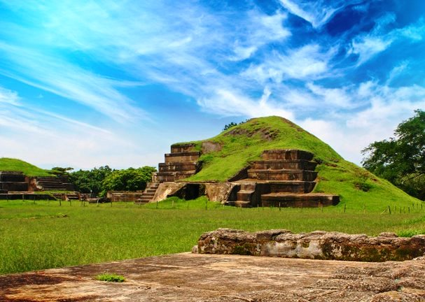

Ruta arqueológica
Si las culturas antiguas llaman tu atención y quieres conocer más sobre ellas, no te puedes perder lo que la ruta arqueológica tiene para ofrecerte. Después de todo, este paseo por El Salvador puede transportarte a una gran variedad de culturas y costumbres que debes conocer.
Conoce la ruta arqueológica de El Salvador
Como ya debes saber, la ruta arqueológica se trata de una de las atracciones turísticas que ofrece este país latinoamericano.
Gracias a ella, quien la visite podrá llegar a conocer mucho más acerca de la vida y costumbres de la cultura Maya, Lenca y Pipil.
¿Qué debo esperar de este paseo?
Como ya dijimos más arriba, durante esta ruta podrás visitar la vasta cantidad de lugares arqueológicos que hay en el territorio salvadoreño. Por ello, podrás contar con un viaje único que te llevará a localidades y estructuras que no verás en ninguna otra parte.
Dentro del abanico de estructuras que se presentarán ante tus ojos estarán pirámides, templos ceremoniales, patios de juegos y mucho más. Asimismo, tendrás acceso a una ventana única desde la cual observar detalles de la cotidianidad de esta cultura a través de lo que dejaron atrás.
La Joya de Cerén
Debido a su reconocimiento internacional, este se trata del primer espacio que debemos mencionar. Desde la erupción del Volcán de Loma Caldera en el año 600 D.C. esta zona ha conservado los vestigios de la vida que ocurría en esta zona.
Actualmente, de las 18 estructuras encontradas, 10 han sido excavadas y abiertas al público.
San Andrés
Por otra parte, otro sitio arqueológico resaltante es el de San Andrés. Después de todo, solo se encuentra a 3km de la primera que mencionamos. Sus 35 hectáreas de terreno lo convierten en uno de los territorios arqueológicos más extensos que puedes visitar en El Salvador.
